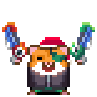
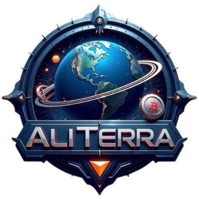

blog
about us
more games
sign up!

HOMEPAGE
Play A Game!
Add A Game!
1 / 9
Data The Destroyer!
2 / 9
That-Hill Games!
3 / 9
Own Your Own Crypto-Mine!
4 / 9
That Hill Finance
5 / 9
D474developments
6 / 9
D474designs
7 / 9
D474media
8 / 9
FREE NFT's!
9 / 9

Web3